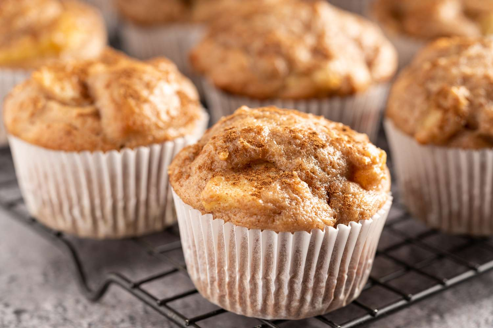

Tired of Protein Shakes? Try the all new Protein Apple Cinnamon Muffins,
for a sweet treat after a tough workout!

Ingredients (6 muffins)
250g (1 cup) unsweetened applesauce
45ml (3 tbsp) unsweetened almond milk
10g (2 tsp) vanilla extract
10g (2 tsp) apple cider vinegar
65g (~½ cup) oat flour
43g (~1⅓ scoop) vanilla or cinnamon protein powder
12 packets (½ cup) sweetener
½ tsp sea salt
2.5g (½ tsp) baking powder
1g (¼ tsp) baking soda
¼ tsp cinnamon (if not using cinnamon protein powder you can add more)
80g chopped apples
Directions
Preheat the oven to 350°F/177°C.
In a bowl mix all the wet ingredients together
In a separate bowl mix all the dry ingredients (leave chopped apples out
until last).
Once both are mixed, combine together and stir thoroughly until smooth.
In the same pan, cook the lean ground turkey until fully cooked. When
fully cooked, remove from the pan, drain/rinse out any excess liquid,
and add to the bowl of onions & garlic.
Add in some (but not all) of the chopped apples and then fold into the
mixture
In a separate bowl, mix Ricotta cheese and spinach.
Scoop the muffin mixture into the silicone muffin mold until the well is
¾ full. Add the remaining apples to the tops of the muffin molds.
Bake in the preheated oven for 18 minutes or until a toothpick comes out
clean.
Let the muffins cool in the molds for a few minutes before removing and
serving.